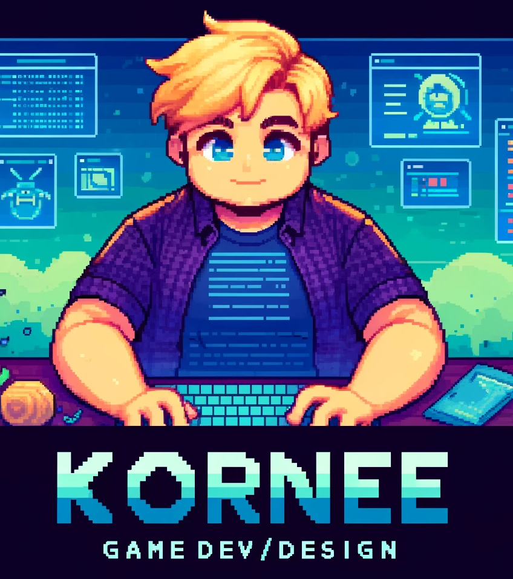
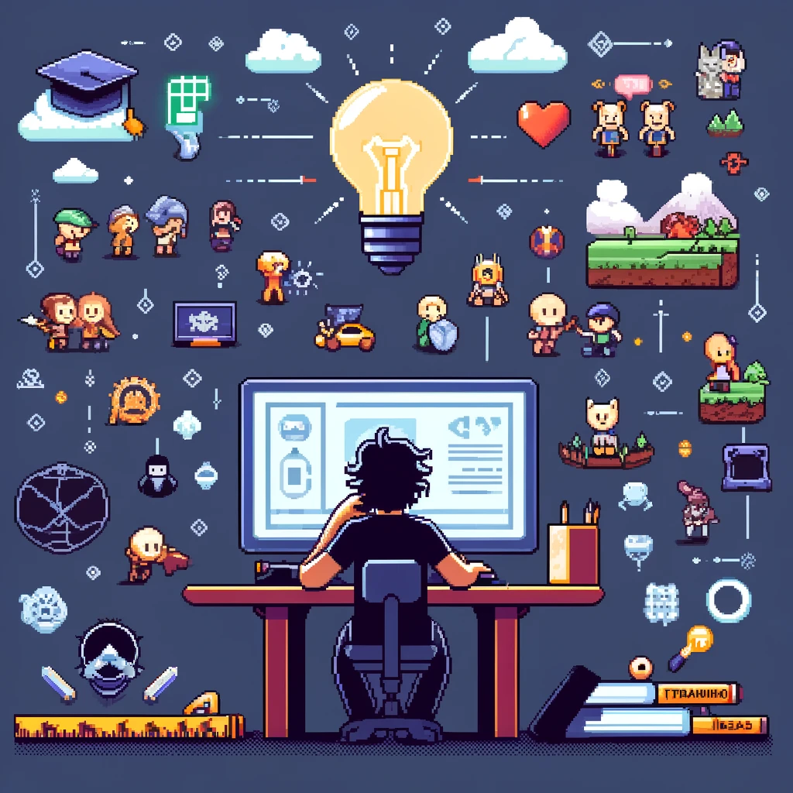

Welcome to My World of Game Development and Design
Hello World! My name is Kornee Hartlief, and I am a dedicated student at Noorderpoort, currently pursuing a vocational college study in Software Development Games Level 4. With three years of student experience and currently an intern, I am passionate about creating engaging and interactive gaming experiences. While I am not highly skilled in art, my strengths lie in game development and design, and I aspire to further my education with a bachelor's degree in game design in the near future.
My Journey

My journey into the world of game development began at Noorderpoort, where I am studying Software Development Games Level 4. This program has provided me with a solid foundation in game development principles, programming, and design. As part of my curriculum, I have gained hands-on experience through various projects and my current internship, which are instrumental in shaping my skills and career goals.
My Philosophy

I believe that games are more than just a form of entertainment; they are a medium for storytelling, connection, training, and/or education. My goal is to create games that not only captivate players but also inspire, challenge, and/or educate them. As I continue my education and career, I am dedicated to pushing the boundaries of what is possible in game development and design.